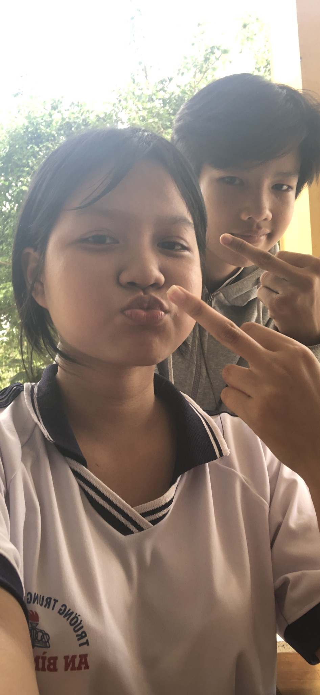
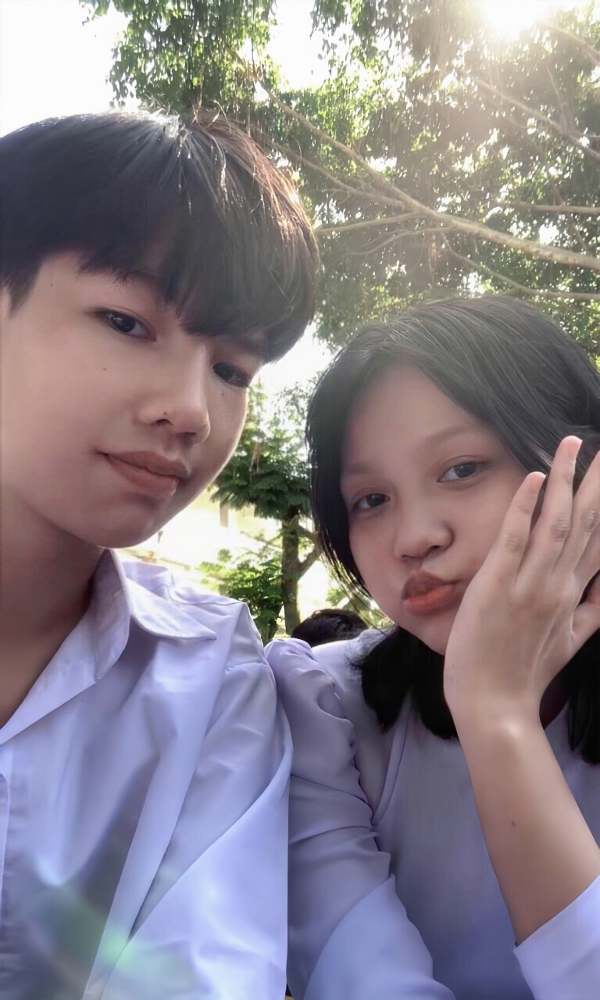
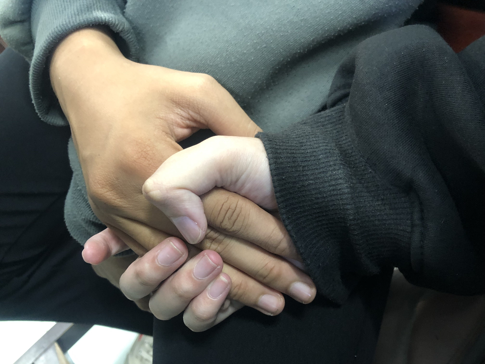

Bấm để mở
Tụi mình khi mới quen nhau

thời gian đầu thật sự rất khó khăn

nhưng tụi mình vẫn cùng nhau đi tiếp

em cảm ơn rất nhiều vì vẫn luôn ở đây

Thư gửi anh
Hôm nay là Valentine 14/3, ngày mà em muốn nói với anh những điều em vẫn luôn giữ trong lòng. Trong thế giới rộng lớn này, có hàng triệu người lướt qua nhau, nhưng thật may mắn vì em đã gặp được anh. Em vẫn luôn nghĩ rằng việc hai người gặp nhau, quen nhau rồi ở lại bên nhau không phải là chuyện hiển nhiên, nên đôi khi em cũng tự hỏi tại sao giữa rất nhiều người như vậy, em lại gặp đúng anh. Anh không phải kiểu người lãng mạn, cũng không giỏi nói những lời ngọt ngào, thậm chí có lúc còn hơi ngốc nữa, nhiều chuyện em phải nói ra anh mới hiểu, phải nhắc thì anh mới để ý. Có những lúc em cũng giận, cũng tủi thân, vì em nghĩ giá như anh tinh ý hơn một chút thì tốt biết mấy. Nhưng rồi nghĩ lại, em vẫn nhận ra rằng dù anh có ngốc nghếch trong cách thể hiện thế nào đi nữa, anh vẫn là người mà em muốn ở cạnh. Có lẽ vì ở bên anh, mọi thứ rất thật, không màu mè, không cố gắng trở thành một phiên bản hoàn hảo nào cả. Em có thể giận dỗi, có thể cằn nhằn, có thể nói nhiều đến mức chính em cũng thấy mình phiền, nhưng anh vẫn ở đó. Valentine này em không muốn nói những lời quá hoa mỹ, em chỉ muốn nói thật lòng rằng ở bên anh em đã có rất nhiều cảm xúc, có lúc vui, có lúc buồn, có lúc bực mình đến mức chỉ muốn đánh anh một cái vì cái đầu ngốc của anh, nhưng cuối cùng thì em vẫn không muốn mất anh. Nếu có điều gì em mong ở anh, thì chỉ là sau này anh có thể hiểu em nhiều hơn một chút, để ý em nhiều hơn một chút, đừng để em lúc nào cũng phải nói ra hết mọi thứ. Nhưng dù sao đi nữa, em vẫn rất biết ơn vì anh đã xuất hiện trong cuộc đời em, vì giữa rất nhiều người ngoài kia, người đang ở cạnh em hôm nay lại là anh. Chúc anh một Valentine 14/3 thật vui, và nếu có thể thì hy vọng những Valentine sau này… người đứng cạnh anh vẫn sẽ là em.
Cảm ơn anh 💗
Em thương anh rất nhiều.